Алексей Турляков wed разработчик
Hello Word
Это страница — портфолио, для ознакомления с моим опытом разработки и навыками програмирования
To ProjectsОбо Мне
Отлично владею базовыми технологиями — HTML5, CSS3, JS (ES6). В своих проектах применяю опыт кроссбраузерной вёрстки, учитываю особенности работы браузеров. Знаком с препроцессорами (SASS, SCSS)и сборщиками проектов (Gulp, Webpack, Vite). Использую HTML шаблонизатор Twig.
Считаю, что соблюдение код стайла — правило хорошего тона. Внимателен к деталям, целеустремлён, желаю работать в команде и развиваться вместе с ней.
Продолжительное время занимался версткой под CMS (Битрикс)
Имею опыт разработки проектов с использованием CSS-методологий и фреймворков. Так же работал с макетами проектов в Figma.
Регулярно работаю с простой (Keyframes) и сложной анимацией (animate JS, GSAP). Присутствует понимание системы контроля версий Git. Есть опыт разработки веб-приложений на Vue 2/3.
Проекты

Веб-сайт для картинной галереи BLANCHARD. Адаптивная кроссбраузерная вёрстка под мобильные устройства. Используются плагины: Swiper, Just Validate, JQuery UI, Yandex Map, SimpleBar Js, Choices JS, Inputmask Js
 Web-приложение для компании Технозавр. Проект разаработан на Vue.JS V2. Используется REST API. Многостраничность реализована по средством VueRouter. Так же используется библиотека управления состояние Vuex

Лендинг одностраничного сайта для фотостудии HIghPass. Сборка проекта на GULP. Для достижения адаптивности в проете используются технологии CSS Grid и Flexbox. Соблюдены базовые требования доступности (семантическая вёрстка, используются атрибуты aria-label, atl). В проекте используется адаптивное burger-menu, плавный scroll по якорным ссылкам.

Web-сайт для маркетингового агентства Дрожжи. Адаптивная вёрстка на CCS Grid и Flexbox. В проекте используется адаптивное burger-menu, плавный scroll по якорным ссылкам. Так же добавлена функция кастомного модального окна.

Web-сайт для проектного агентства. Семантическая, адаптивная, кроссбраузерная вёрска проекта. Для реализации главного блока используется Swiper.js. В разработке проекта применяется JQuery.

Лендинг одностраницного сайта для Skillbox. При разработке проекта используется CSS фреймворк — Boostrap. Адаптивная вёрстка сайта реализована по средствам использования тегов фремворка Boostrap.